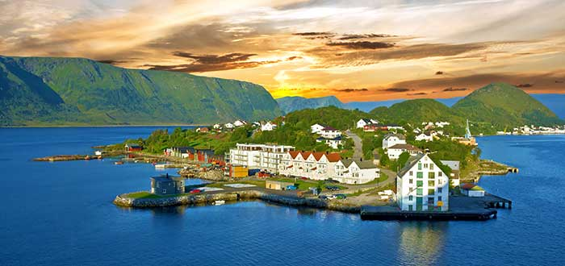
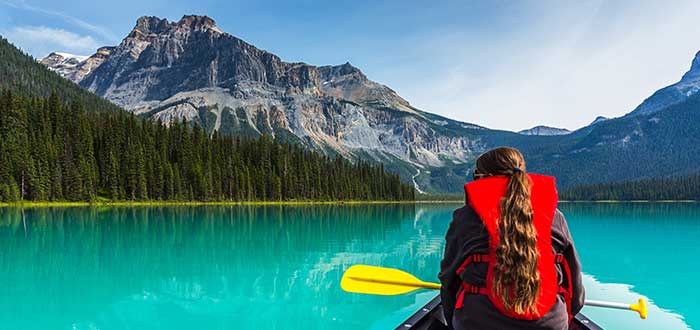
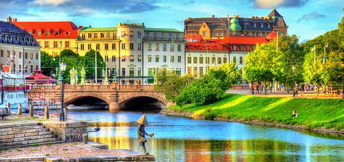

El gobierno del presidente Iván Duque puso en marcha desde ayer una cruzada internacional dirigida a explicarle al mundo las objeciones que hizo a la ley estatutaria de la Jurisdicción Especial para la Paz (JEP). Este mismo lunes, Duque y su canciller, Carlos Holmes Trujillo, recibieron al cuerpo diplomático acreditado en Colombia y los dos respondieron todos los interrogantes que los embajadores les plantearon sobre el tema.
TERMINE DE LEER HACIENDO CLICK AQUÍ| PAIS | DESCRIPCIÓN | IMAGEN |
|---|---|---|
| Noruega | Noruega es un buen representante de la calidad de vida que ofrecen
los países escandinavos, líderes en igualdad laboral entre hombres y mujeres y conocidos por su protección de la familia. El sistema educativo noruego está considerado entre los mejores del mundo y es lo que explica el interés por todas las ramas del saber de los noruegos de todas las edades. Su esperanza de vida, situada en los 82 años, es otro punto a su favor. |
 |
| Canadá | El tercer país del mundo en reservas de petróleo ha sabido
establecer un sistema económico a medio camino entre el liberalismo económico y la oferta de amplias coberturas sociales. Multicultural e innovadora, Canadá aparece siempre entre los 10 países con mejor calidad de vida porque cuenta con un mercado laboral competitivo y un envidiable nivel académico, con varias universidades entre las mejores del mundo. Sus 35 millones de habitantes se enorgullecen, con razón, de una incomparable riqueza medioambiental y animal; no en vano los parques nacionales de Canadá están entre los mejores del mundo y además se cuentan por decenas. |
 |
| Suecia | El estilo de vida sueco vive un verdadero boom en todo el mundo.
Lo que los suecos llaman ‘Lagom’, una expresión que no cuenta con traducción en castellano, es un estilo de vida en el que las cosas sencillas son las más importantes de la vida. ¿Quieres ejemplos? Pasar tiempo con la familia y amigos, conciliar trabajo y vida personal, tener pocas posesiones, cuidar el medioambiente y estar en contacto con la familia… ‘Lagom’ es solo la punta del iceberg de un país en el que 8 de cada 10 adultos cuenta con educación superior, rico, igualitario y sin desempleo. |
 |